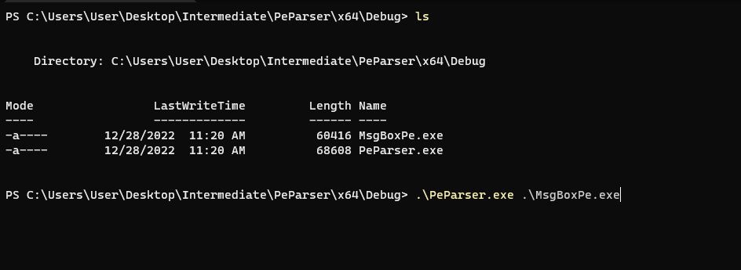
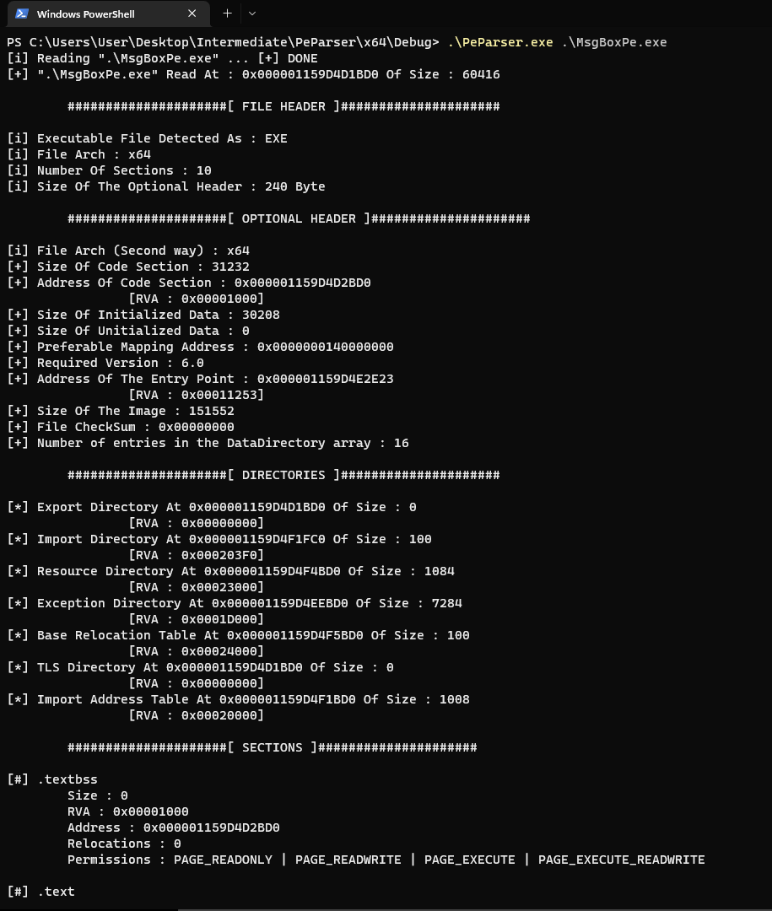

Introduction
Early on in a beginner module, the PE file format structure was briefly discussed. The module focused more on the theory rather than a programmatical perspective of accessing each header. This module will explain the process of extracting components of a PE file and provide more insight into the file structure, which will ultimately become a prerequisite for more advanced modules.
Review the introductory PE file structure module if the PE structure is not well understood.
PE Structure
Recall the diagram below from the introductory module which shows a simplified structure of the PE format. Every header shown in the image is defined as a data structure that holds information about the PE file.

Relative Virtual Addresses (RVAs)
Relative Virtual Addresses (RVAs) are addresses that are used to reference locations within a PE file. They are used to specify the location of various data structures and sections within the PE file, such as code, data, and resources.
An RVA is a 32-bit value that specifies the offset of a data structure or section from the beginning of the PE file. It is called a "relative" address because it specifies the offset from the beginning of the file, rather than an absolute address in memory. This allows the same file to be loaded at different addresses in memory without requiring any changes to the RVAs within the file.
RVAs are used extensively in the PE file format to specify the location of various data structures and sections within the file. For example, the PE header contains several RVAs that specify the location of the code and data sections, the import and export tables, and other important data structures.
To convert an RVA to a virtual address (VA), the operating system adds the base address of the module (the location in memory where the module is loaded) to the RVA. This allows the operating system to access the data at the specified location within the module, regardless of where the module is loaded in memory.
DOS Header (IMAGE_DOS_HEADER)
The DOS header is located at the beginning of a PE file and contains information about the file, such as its size, and characteristics. Most importantly, it contains the RVA (offset) to the NT header.
The following snippet demonstrates how to retrieve the DOS header.
// Pointer to the structure
PIMAGE_DOS_HEADER pImgDosHdr = (PIMAGE_DOS_HEADER)pPE;
if (pImgDosHdr->e_magic != IMAGE_DOS_SIGNATURE){
return -1;
}Since the DOS header is located at the very beginning of a PE file, retrieving the DOS header is only a matter of typecasting the pPE variable to a PIMAGE_DOS_HEADER. This provides a pointer to the DOS header structure. After that, a DOS signature check is performed to verify that the DOS header is valid.
NT Header (IMAGE_NT_HEADERS)
The e_lfanew member of the DOS header is an RVA to the IMAGE_NT_HEADERS structure. To reach the NT header, simply add the base address of the PE file in memory to the offset (e_lfanew). This is done in the following code snippet.
// Pointer to the structure
PIMAGE_NT_HEADERS pImgNtHdrs = (PIMAGE_NT_HEADERS)(pPE + pImgDosHdr->e_lfanew);
if (pImgNtHdrs->Signature != IMAGE_NT_SIGNATURE) {
return -1;
}The if statement is an NT Signature check to confirm the validity of the IMAGE_NT_HEADERS structure.
File Header (IMAGE_FILE_HEADER)
Since the file header is a member of the IMAGE_NT_HEADERS structure, it is can be accessed using the following line of code.
IMAGE_FILE_HEADER ImgFileHdr = pImgNtHdrs->FileHeader;File Header Members
The members of the IMAGE_FILE_HEADER structure are described below.
Machine - The type of machine for which the PE file or object file is intended.NumberOfSections - The number of sections in the PE file or object file.TimeDateStamp - Time and date when the PE file or object file was created.PointerToSymbolTable - Offset in the file to the symbol table, if it exists.NumberOfSymbols - Number of symbols in the symbol table.SizeOfOptionalHeader - The size of the optional header.Characteristics - The characteristics of the PE file or object file. The values of this field are defined by the IMAGE_FILE_* constants; these specify the type of the PE file (.exe, .dll, .sys).Optional Header (IMAGE_OPTIONAL_HEADER)
Since the optional header is a member of the IMAGE_NT_HEADERS structure, it is can be accessed using the following code.
IMAGE_OPTIONAL_HEADER ImgOptHdr = pImgNtHdrs->OptionalHeader;
if (ImgOptHdr.Magic != IMAGE_NT_OPTIONAL_HDR_MAGIC) {
return -1;
}The if statement is used to verify the optional header. IMAGE_NT_OPTIONAL_HDR_MAGIC's value depends on whether the application is 32 or 64-bit.
IMAGE_NT_OPTIONAL_HDR32_MAGIC - 32-bitIMAGE_NT_OPTIONAL_HDR64_MAGIC - 64-bitDepending on the compiler architecture, the IMAGE_NT_OPTIONAL_HDR_MAGIC constant will automatically expand to the correct value.
Optional Header Important Members
The most important members of the IMAGE_OPTIONAL_HEADER structure are explained below.
Magic - Specifies the type of optional header that is present in the file.MajorLinkerVersion and MinorLinkerVersion - Specify the version of the linker that was used to create the PE file.SizeOfCode, SizeOfInitializedData, and SizeOfUninitializedData - Specifies the sizes of the code, initialized data, and uninitialized data sections in the PE file, respectively.AddressOfEntryPoint - Specifies the address of the entry point function in the PE file, This is an RVA to the entry point.BaseOfCode and BaseOfData - Specify the base addresses of the code and data sections in the PE file, respectively, These are RVAs.ImageBase - specifies the preferred base address at which the PE file should be loaded.MajorOperatingSystemVersion and MinorOperatingSystemVersion - Specify the minimum version of the operating system required to run the PE file.MajorImageVersion and MinorImageVersion - Specify the version of the PE file.DataDirectory - One of the most important members in the optional header. This is an array of IMAGE_DATA_DIRECTORY, which contains the directories in a PE file (discussed below).DataDirectory (IMAGE_DATA_DIRECTORY)
The Data Directory can be accessed from the optional's header last member. This is an array of IMAGE_DATA_DIRECTORY meaning each element in the array is an IMAGE_DATA_DIRECTORY structure that references a special data directory. The IMAGE_DATA_DIRECTORY structure is shown below.
typedef struct _IMAGE_DATA_DIRECTORY {
DWORD VirtualAddress;
DWORD Size;
} IMAGE_DATA_DIRECTORY, *PIMAGE_DATA_DIRECTORY;The fields of the structure contain information such as:
VirtualAddress - Specifies the virtual address of the specified structure in the PE file, these are RVAs.Size - Specifies the size of the data directory.Accessing Data Directories
Some of the predefined data directories in a PE file include:
IMAGE_DIRECTORY_ENTRY_EXPORT - Contains information about the functions and data that are exported from the PE file.IMAGE_DIRECTORY_ENTRY_IMPORT - Contains information about the functions and data that are imported from other modules.IMAGE_DIRECTORY_ENTRY_RESOURCE - Contains information about the resources (such as icons, strings, and bitmaps) that are included in the PE file.IMAGE_DIRECTORY_ENTRY_EXCEPTION - Contains information about the exception handling tables in the PE file.The data directories can be accessed using the following line of code.
IMAGE_DATA_DIRECTORY DataDir = ImgOptHdr.DataDirectory[#INDEX IN THE ARRAY#];For example, retrieving the data directory of the export directory is done as follows:
IMAGE_DATA_DIRECTORY ExpDataDir = ImgOptHdr.DataDirectory[IMAGE_DIRECTORY_ENTRY_EXPORT];Export Table (IMAGE_EXPORT_DIRECTORY)
Unfortunately, this structure is not officially documented by Microsoft at the time of writing this module. Therefore, to understand the structure, unofficial documentation is used which can be found on the internet.
Export Table Structure
The export table is a structure defined as IMAGE_EXPORT_DIRECTORY which is shown below.
typedef struct _IMAGE_EXPORT_DIRECTORY {
DWORD Characteristics;
DWORD TimeDateStamp;
WORD MajorVersion;
WORD MinorVersion;
DWORD Name;
DWORD Base;
DWORD NumberOfFunctions;
DWORD NumberOfNames;
DWORD AddressOfFunctions; // RVA from base of image
DWORD AddressOfNames; // RVA from base of image
DWORD AddressOfNameOrdinals; // RVA from base of image
} IMAGE_EXPORT_DIRECTORY, *PIMAGE_EXPORT_DIRECTORY;Retrieving The Export Table
The IMAGE_EXPORT_DIRECTORY structure is used to store information about the functions and data that are exported from a PE file. This information is stored in the data directory array with the index IMAGE_DIRECTORY_ENTRY_EXPORT. To fetch it from the IMAGE_OPTIONAL_HEADER structure:
PIMAGE_EXPORT_DIRECTORY pImgExportDir = (PIMAGE_EXPORT_DIRECTORY)(pPE + ImgOptHdr.DataDirectory[IMAGE_DIRECTORY_ENTRY_EXPORT].VirtualAddress);Where pPE is the base address of the loaded PE in memory and ImgOptHdr is the IMAGE_OPTIONAL_HEADER structure previously calculated.
Export Table Important Members
The most important members of the export table are the following:
NumberOfFunctions - Specifies the number of functions that are exported by the PE file.NumberOfNames - Specifies the number of names that are exported by the PE file.AddressOfFunctions - Specifies the address of an array of addresses of the exported functions.AddressOfNames - Specifies the address of an array of addresses of the names of the exported functions.AddressOfNameOrdinals - Specifies the address of an array of ordinal numbers for the exported functions.Import Address Table (IMAGE_IMPORT_DESCRIPTOR)
The import address table is an array of IMAGE_IMPORT_DESCRIPTOR structures with each one being for a DLL file that contains the functions that were used from these DLLs.
Import Address Table Structure
The IMAGE_IMPORT_DESCRIPTOR structure is also not officially documented by Microsoft although it is defined in the Winnt.h Header File as follows:
typedef struct _IMAGE_IMPORT_DESCRIPTOR {
union {
DWORD Characteristics;
DWORD OriginalFirstThunk;
} DUMMYUNIONNAME;
DWORD TimeDateStamp;
DWORD ForwarderChain;
DWORD Name;
DWORD FirstThunk;
} IMAGE_IMPORT_DESCRIPTOR;Retrieving The Import Address Table
To fetch the import address table from the IMAGE_OPTIONAL_HEADER structure:
IMAGE_IMPORT_DESCRIPTOR* pImgImpDesc = (PIMAGE_IMPORT_DESCRIPTOR)(pPE + ImgOptHdr.DataDirectory[IMAGE_DIRECTORY_ENTRY_IMPORT].VirtualAddress);Where pPE is the base address of the loaded PE in memory and ImgOptHdr is the IMAGE_OPTIONAL_HEADER structure previously calculated.
Additional Undocumented Structures
Several undocumented structures can be accessed via the IMAGE_DATA_DIRECTORY array in the optional header but are not documented in the Winnt.h header file. These include the Import Address Table and Export Table discussed earlier, as well as additional structures. Below are a few more examples of undocumented structures.
IMAGE_TLS_DIRECTORY - This structure is used to store information about Thread-Local Storage (TLS) data in the PE file. It is important to be aware of how to retrieve this structure from the IMAGE_OPTIONAL_HEADER structure at this time; further details will be provided in subsequent modules when necessary.PIMAGE_TLS_DIRECTORY pImgTlsDir = (PIMAGE_TLS_DIRECTORY)(pPE + ImgOptHdr.DataDirectory[IMAGE_DIRECTORY_ENTRY_TLS].VirtualAddress);IMAGE_RUNTIME_FUNCTION_ENTRY - This structure is used to store information about a runtime function in the PE file. A runtime function is a function that is called by the Windows operating system's exception handling mechanism to execute the exception handling code for an exception. It is important to be aware of how to retrieve this structure from the IMAGE_OPTIONAL_HEADER structure at this time; further details will be provided in subsequent modules when necessary.PIMAGE_RUNTIME_FUNCTION_ENTRY pImgRunFuncEntry = (PIMAGE_RUNTIME_FUNCTION_ENTRY)(pPE + ImgOptHdr.DataDirectory[IMAGE_DIRECTORY_ENTRY_EXCEPTION].VirtualAddress);IMAGE_BASE_RELOCATION - This structure is used to store information about the base relocations in the PE file. Base relocations are used to fix up the addresses of imported functions and variables in a PE file when it is loaded into memory at an address that differs from the address at which it was linked. It is important to be aware of how to retrieve this structure from the IMAGE_OPTIONAL_HEADER structure at this time; further details will be provided in subsequent modules when necessary.PIMAGE_BASE_RELOCATION pImgBaseReloc = (PIMAGE_BASE_RELOCATION)(pPE + ImgOptHdr.DataDirectory[IMAGE_DIRECTORY_ENTRY_BASERELOC].VirtualAddress);PE Sections
Be aware of the important PE sections such as .text, .data, .reloc, .rsrc. Additionally, there may be more PE sections depending on the compiler and its settings. Each of these sections has a IMAGE_SECTION_HEADER structure that contains information about it. The IMAGE_SECTION_HEADER structure is defined below.
typedef struct _IMAGE_SECTION_HEADER {
BYTE Name[IMAGE_SIZEOF_SHORT_NAME];
union {
DWORD PhysicalAddress;
DWORD VirtualSize;
} Misc;
DWORD VirtualAddress;
DWORD SizeOfRawData;
DWORD PointerToRawData;
DWORD PointerToRelocations;
DWORD PointerToLinenumbers;
WORD NumberOfRelocations;
WORD NumberOfLinenumbers;
DWORD Characteristics;
} IMAGE_SECTION_HEADER, *PIMAGE_SECTION_HEADER;IMAGE_SECTION_HEADER Important Members
Some of IMAGE_SECTION_HEADER's most important members;
Name - A null-terminated ASCII string that specifies the name of the section.VirtualAddress - The virtual address of the section in memory, this is an RVA.SizeOfRawData - The size of the section in the PE file in bytes.PointerToRelocations - The file offset of the relocations for the section.NumberOfRelocations - The number of relocations for the section.Characteristics - Contains flags that specify the characteristics of the section.Retrieving The IMAGE_SECTION_HEADER Structure
The IMAGE_SECTION_HEADER structure is stored in an array within the PE file's headers. To access the first element, skip past the IMAGE_NT_HEADERS since the sections are located immediately after the NT headers. The following snippet shows how to retrieve the IMAGE_SECTION_HEADER structure, where pImgNtHdrs is a pointer to IMAGE_NT_HEADERS structure.
PIMAGE_SECTION_HEADER pImgSectionHdr = (PIMAGE_SECTION_HEADER)(((PBYTE)pImgNtHdrs) + sizeof(IMAGE_NT_HEADERS));Looping Through The Array
Looping through the array requires the array size which can be retrieved from the IMAGE_FILE_HEADER.NumberOfSections member. The subsequent elements in the array are located at an interval of sizeof(IMAGE_SECTION_HEADER) from the current element.
PIMAGE_SECTION_HEADER pImgSectionHdr = (PIMAGE_SECTION_HEADER)(((PBYTE)pImgNtHdrs) + sizeof(IMAGE_NT_HEADERS));
for (size_t i = 0; i < pImgNtHdrs->FileHeader.NumberOfSections; i++) {
// pImgSectionHdr is a pointer to section 1
pImgSectionHdr = (PIMAGE_SECTION_HEADER)((PBYTE)pImgSectionHdr + (DWORD)sizeof(IMAGE_SECTION_HEADER));
// pImgSectionHdr is a pointer to section 2
}Demo
This demo shows the PeParser project which is shared in this module. It can be used to parse PE files using the methods discussed throughout the module. Keep in mind, PeParser should be compiled as a 32-bit binary to parse a 32-bit program and 64-bit for a 64-bit program.

